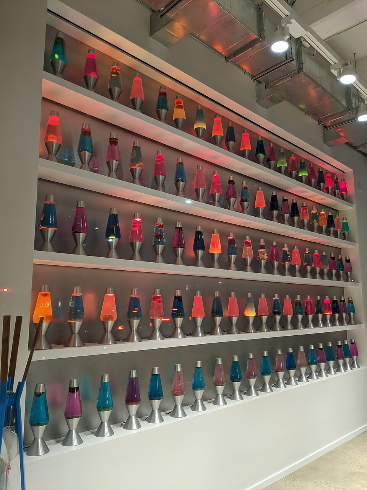
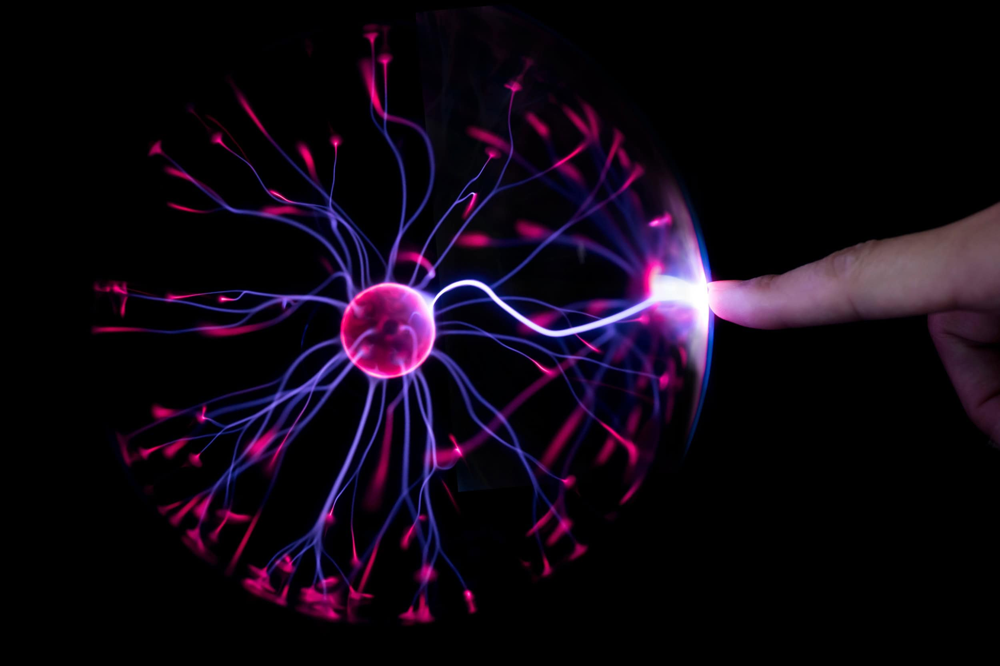
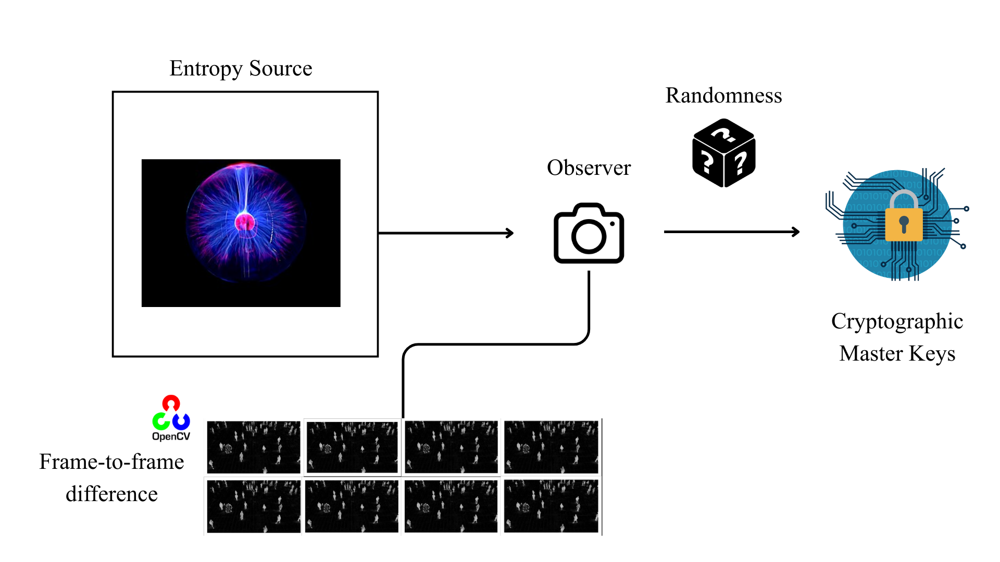

Abstract. In the world of cryptography, entropy is the fuel that powers the engine. Without high-quality randomness, even the strongest encryption algorithms (like AES-256) are effectively useless. While industrial solutions like Cloudflare’s "Wall of Entropy" utilize large-scale fluid dynamics, this paper explores a compact, desktop-scale solution. We document the engineering of a cryptographically viable entropy source using a standard plasma ball and a Logitech C270 HD Webcam, harnessing high-voltage dielectric breakdown.

Computers are deterministic machines designed to execute instructions precisely, making them inherently poor at generating "true" randomness. To address this, we must inject unpredictability from the physical world.
From a signal processing perspective, a plasma ball provides a rich source of non-deterministic data. Inside the glass sphere is a mixture of noble gases (typically neon, krypton, and xenon) at low pressure. A high-voltage electrode in the center creates an alternating electric field.

When voltage exceeds the breakdown voltage of the gas, "filaments" form—streamers of plasma extending to the outer glass. The movement of these filaments is driven by thermal convection. As the plasma heats the gas, the gas rises, carrying the filament with it. This creates two distinct layers of entropy:
Raw physical data is rarely suitable for immediate cryptographic use due to bias and patterns. To transform the video feed into secure key material, we implemented a four-stage pipeline: Frame Differencing, Accumulation, Conditioning, and Key Derivation.

A raw snapshot contains significant static data (background, dead pixels), which reduces the effective search space for an attacker. We utilize a Frame Difference approach to isolate motion. Mathematically, the entropy signal \( S \) at time \( t \) is derived as:
We use the absolute difference (implemented via cv2.absdiff) to ensure magnitude capture. This acts as a digital high-pass filter, rejecting the low-frequency "DC bias" and passing only the high-frequency AC signal.
The resulting differential data represents the "delta." We interpret these pixel intensities as a byte array, forming the "Raw Optical Entropy." However, this data remains statistically flawed (e.g., periods of low motion resulting in zero-valued bytes).
To correct statistical bias, the accumulated bytes are passed through a Cryptographic Hash Function. We utilize SHA-256 to exploit the Avalanche Effect, where flipping a single input bit results in a ~50% probability of any output bit flipping.
A hash is not a key. We employ the HMAC-based Extract-and-Expand Key Derivation Function (HKDF), as defined in RFC 5869, to derive strong key material. By setting the context parameter to b'PlasmaBall-Gen-v1', we ensure mathematical independence from other applications using the same source.
We avoid the term "True Randomness," which implies a theoretical ideal. This system is classified as Physically Sourced Optical Entropy. It relies on the chaotic physics of dielectric breakdown, which is effectively unpredictable for practical security models.
The Logitech C270 operates at 30 FPS, limiting the entropy generation rate. This system is suitable for seeding a Pseudo-Random Number Generator (PRNG) or generating master keys, but not for real-time, high-throughput stream encryption (e.g., one-time pads). A robust implementation must monitor the frame difference \( |\Delta P| \); if it drops below a set threshold, key generation must cease immediately.
This project demonstrates that robust entropy generation is achievable without industrial hardware. By combining fluid dynamics, computer vision, and standard cryptographic primitives (SHA-256, HKDF), we transformed a novelty science item into a functional security component. It serves as a reminder that the digital security landscape is inextricably linked to physical reality.